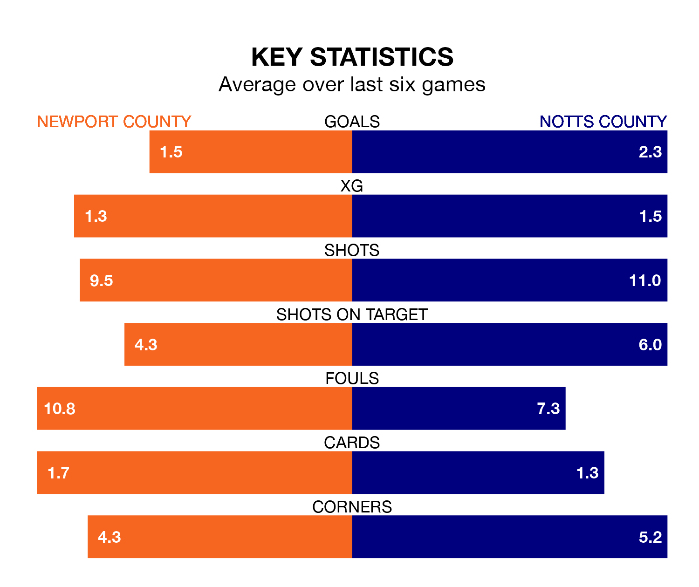

Newport County host Notts County at Rodney Parade on late Tuesday on the back of four consecutive wins in EFL League Two.
Newport have picked up 14 points from their last six games, and they face a Notts County side who have lost their last two matches, and collected five points from the last possible 18.
With 62 goals in 30 games so far this season, Notts County are the league's second-highest scorers with 2.1 goals per game. But they are conceding more than average too, letting in 57 goals at a rate of 1.9 per game.
Newport, meanwhile, are average scorers, with 1.5 goals per game. They have also conceded 1.5 goals per game.
In Macaulay Langstaff, the visitors have the league's sharpest shooter so far this season. He has notched 20 goals in 30 appearances.
His goal rate of one every 131 minutes is quicker than that of Will Evans, Newport County's top scorer with a goal every 146 minutes, and a total of 17 goals in 30 games.
In the last 10 years, Newport and Notts County have played each other on nine occasions. They won four each, and they drew once.
On average, the Exiles scored 1.7 goals and Notts County 1.7 in those matches.
Their last meeting was on October 24, when Notts County won 3-0 at home.
Notts County are 10th in the table after 30 games, of which they have won 13 and drawn five, earning 44 points.
The Exiles are one place behind Notts County in 11th, with 12 wins and seven draws putting them on 43 points.
Newport's last match was on Saturday, a 3-0 win against Walsall, with Bryn Morris, Henry Charsley and Will Evans getting the goals for the Exiles.
Notts County lost 3-1 against Gillingham last time out, on Friday, with Daniel Crowley on the scoresheet.
Tuesday's match will be refereed by Charles Breakspear, who has taken charge of seven EFL League Two games so far this season, issuing two red cards and booking 29 players. He has awarded five penalties.
The last Newport game Breakspear refereed was a 3-0 away loss to Notts County on October 24. His last Notts County match was their 3-0 win at home against Newport County on October 24.
Updated: 13:30 (UTC), 12/02/24